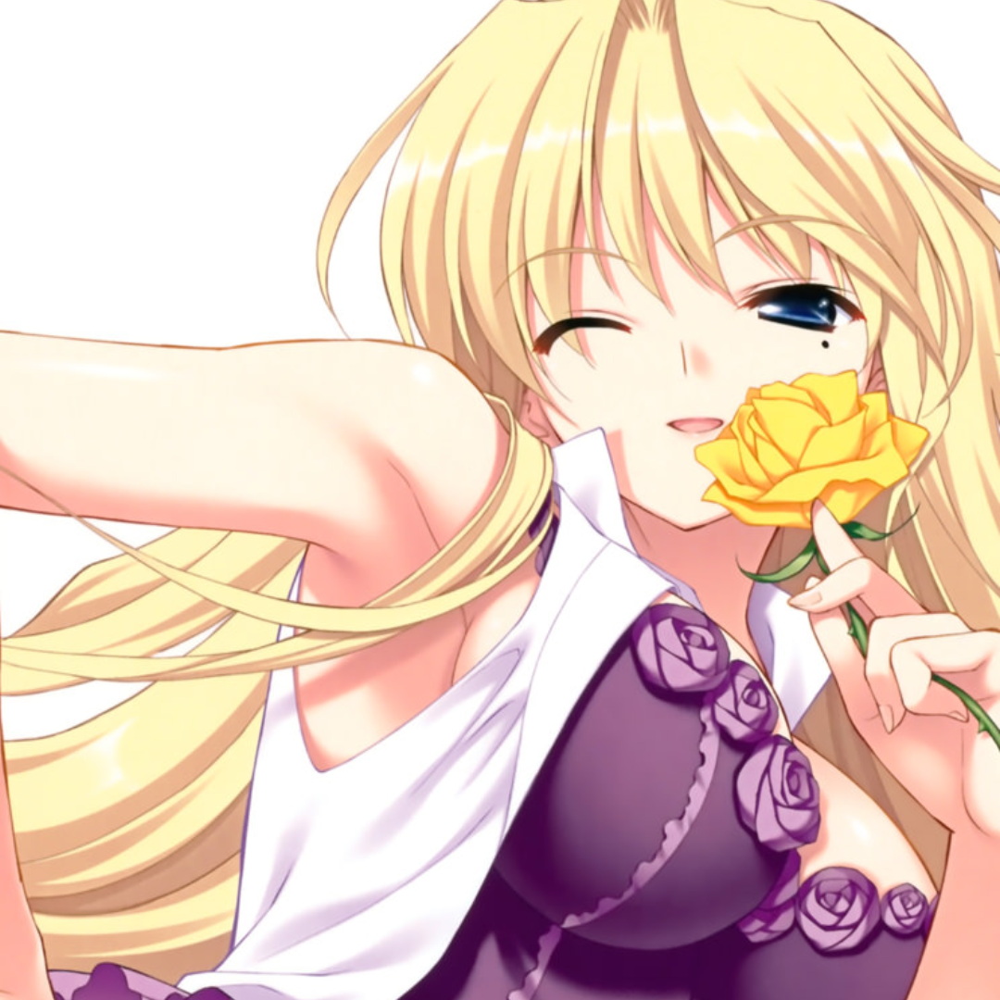

Maaf Kalo ada kekeliruan atau kesalahan dalam informasinya yang aku buat
🖱️ Seret untuk geser · Scroll untuk zoom · Hover untuk melihat jalur · Klik untuk detail
📖 Buku Harian ↓
MAP
=Catatan Keseharianku
Gulir ke bawah
Lihat Galeri Gambar!

Donate kan dulu rek :3
Informasi Catatan
Selamat datang di buku harian digital pribadiku! Ini adalah tempatku mencatat semua kejadian, pikiran, dan momen penting dalam keseharianku.
Setiap catatan merepresentasikan hari atau peristiwa yang ingin kuingat. Dari hal-hal kecil yang membuatku tersenyum, hingga momen besar yang mengubah hidupku.
Gunakan tombol navigasi di bawah untuk membaca catatan-catatanku. Setiap catatan memiliki tanggal dan waktu yang mencerminkan kapan kejadian itu terjadi atau kapan aku menulisnya.
Total Catatan:12 entri Terakhir Diperbarui: 25/01/2026 Kategori: Keseharian, Refleksi, Pengalaman
Pikiran & Ide
25 Januari 2026 - 07:30
Pagi ini aku bangun dengan pikiran bahwa setiap hari adalah kesempatan baru. Aku harus lebih disiplin dalam mencatat hal-hal kecil yang sering terlupakan.
20 Januari 2026 - 22:15
Kadang aku merasa dunia bergerak terlalu cepat. Mencatat semua ini membantuku melambat dan menghargai setiap momen.
15 Januari 2026 - 14:00
Ide baru: mungkin aku harus menambahkan foto atau gambar di setiap catatan agar lebih berwarna.
Tinjauan & Refleksi
Minggu Ini - 25/01/2026
Minggu yang Produktif: Banyak hal baik terjadi. Aku berhasil menyelesaikan proyek yang ditunda dan mulai rutin baru.
Bulan Ini - Januari 2026
Evaluasi Bulanan: Januari penuh dengan tantangan baru. Ada banyak pelajaran berharga yang aku dapatkan dari kegagalan-kegagalan kecil.
Tahun Ini - 2026
Resolusi: Tahun ini aku ingin lebih konsisten dalam mencatat, lebih berani mencoba hal baru, dan tidak lupa bersyukur.
Buku Harian Digital Pribadi
Catatan Keseharianku - Setiap Hari adalah Cerita
Penulis: Diriku Sendiri
Tanggal publikasi catatan terakhir: 25/01/2026
Ini adalah kumpulan catatan pribadiku—sebuah buku harian digital yang berisi momen-momen penting, pikiran liar, dan kejadian sehari-hari yang membentuk siapa aku.
Dari pagi yang cerah hingga malam yang tenang, setiap entri adalah potongan waktu yang telah kulewati. Ada tawa, ada air mata, ada kebingungan, dan ada pencerahan.
Beberapa catatan mungkin terlihat sepele, tapi bagiku itu berarti sesuatu. Karena hidup tidak selalu tentang momen besar, tapi juga tentang kumpulan momen-momen kecil yang sering terlupakan.
Selamat membaca, dan semoga catatanku bisa mengingatkanmu untuk juga menghargai kisah-kisah kecil dalam hidupmu sendiri.
Total 12 catatan telah ditulis
Periode mencakup Januari 2026
Tersedia dalam format digital
Dapat dibaca kapan saja ... >>Baca selengkapnya
(i)
Tips Menulis: Mulai Catatan Harianmu
Menulis 5 menit sehari bisa mengubah cara pandangmu terhadap hidup. Klik untuk melihat tips lengkap!